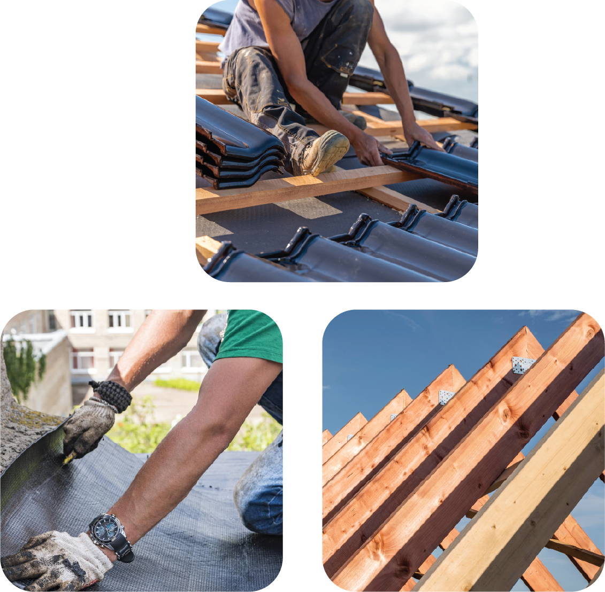

Websites
Websites for
Roofers
Roofer based in the UK? Get in touch we think we could improve your business!
Websites
Roofer based in the UK? Get in touch we think we could improve your business!
We would say that getting a website as a roofer is a smart move. The amount of positives it adds to your business is outstanding. It builds credibility, trust, and provides a way to show who you are as a company, presenting your values and building a closer relationship with your leads. It’s really hard to market a company through word of mouth alone. Don’t get me wrong, we love word of mouth and think it’s a great way of generating warm leads. However, when someone recommends your roofing services, the first thing they will do is cross-reference your information online to see if you are the real deal. So, if someone does recommend your services, you will be well-prepared to win the credibility award. The potential customer will be won over by your previous work, reviews from past customers, and information about your company, adding a personal touch. From our perspective, you will have a very impressed warm lead.
As well as your warm leads, we don't want your cold leads to get left out either. A website can absolutely help attract customers who don’t know you yet. We love a good Facebook page and happen to offer its management as a service; however, sometimes a Facebook page doesn’t cut it when trying to win over a potential client. If you’re looking to advertise on Facebook as a trades business (which we think is an awesome idea), it can be great having a page that represents who you are as a company. But do you know what's better (you probably guessed it): a website! Instead of one source of reviews, you can have multiple, from your Facebook, Google, and everywhere else. You can also do things your way; if you want to write a massive case study on one of your roofing jobs, then you can! Websites are all about credibility and creating a meaningful experience for your customer that they won’t get anywhere else online.
We also believe you should gather as much information about your customer before they request a quote. That’s why we create contact forms that allow customers to specifically request jobs, saving you time in determining exactly what they need. A straightforward web form is always good and has the potential to save a lot of time. Investing in a professional website is a crucial step for any roofing business looking to thrive in today’s online landscape. It not only enhances your credibility and trustworthiness but also provides a platform to showcase your work, engage with potential clients, and stand out from the competition. Don’t miss out on the opportunity to create a lasting impression and build stronger relationships with your clients. At Fortis we would love to hear from your roofing company, we are yet to build a site for a roofing business but we are well equipped to do so as most of the tools we use for other trade industries can be used for your business too! We are looking forward to hearing, thanks for reading!
 Start building yours!
Start building yours!
 Start building yours!
Start building yours!